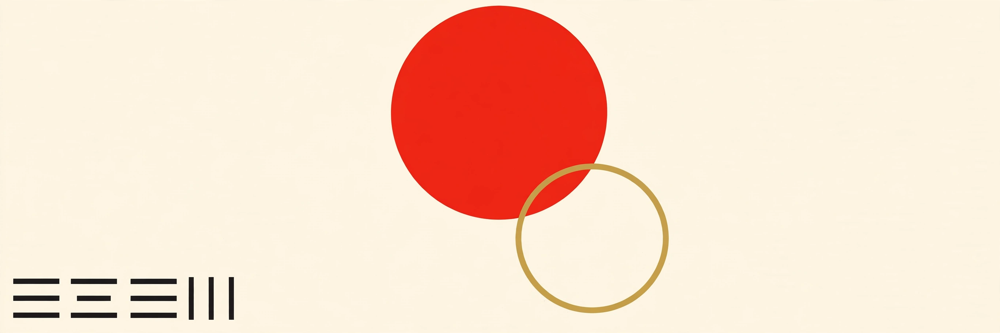
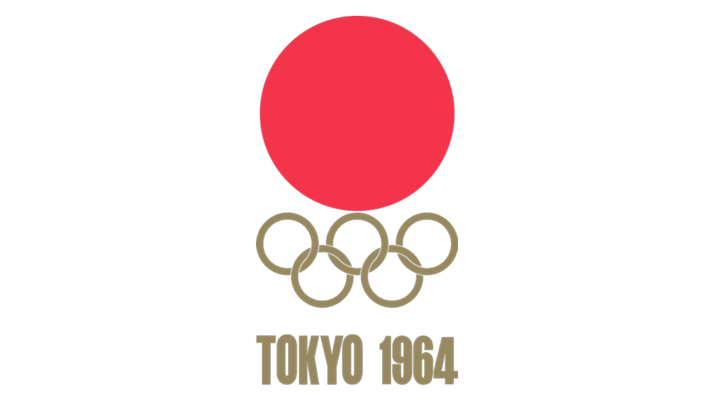
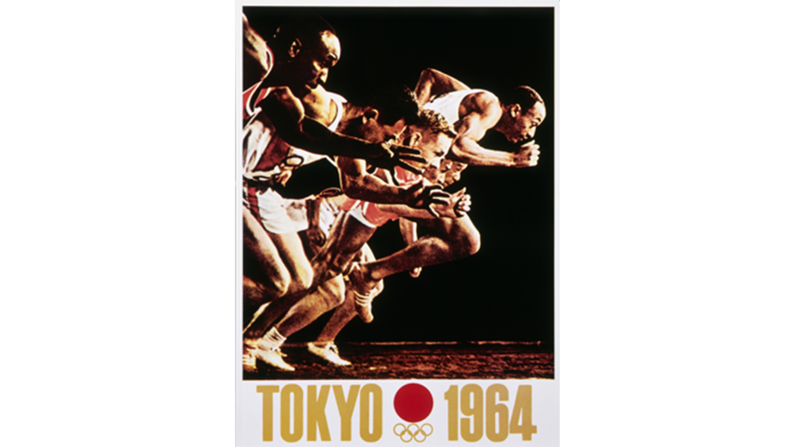
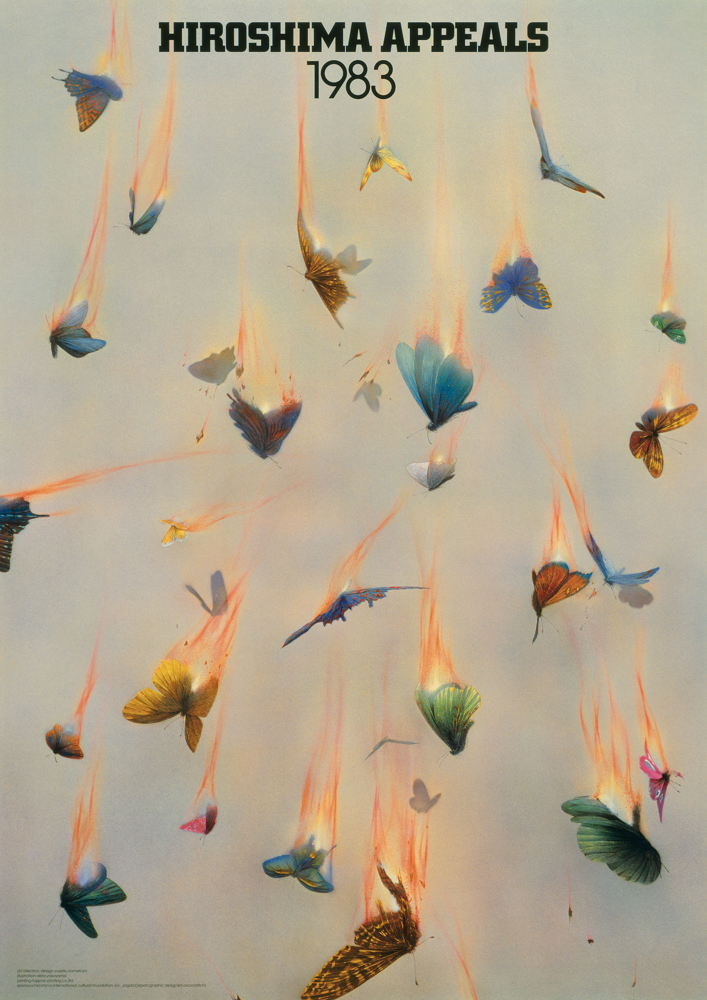
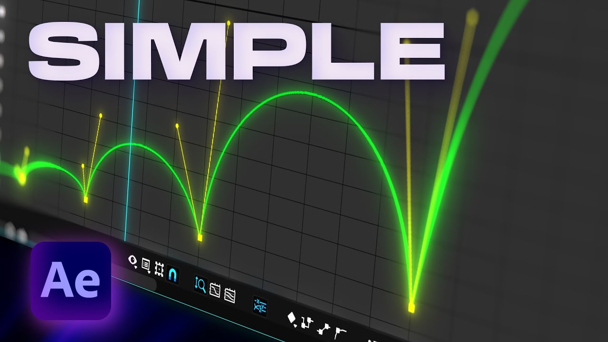
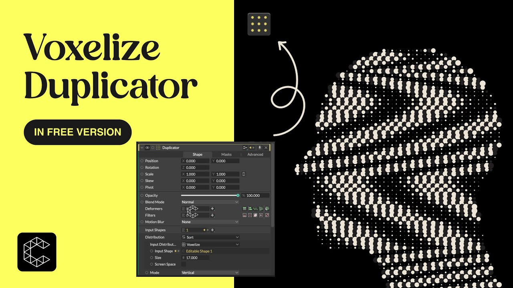

ニュース
今日のハイライト
- ジョナサン・グレイザー監督×ホアキン・フェニックス、7分の悪夢のような広告映画が今日の主役。スペック説明を捨てた世界観づくりの広告がここまで来た。
- LoL世界大会の2Dシネマティックと、ミツバチの群れを都市に見立てるCG実験『Quorum』。モーション／アニメーション系が充実した一日。
- ソニーFX5のX-OCN実践インタビュー。現場の作り手に直結する、撮って・仕上げる話。
1. グレイザー×ホアキン・フェニックス、7分の悪夢のような広告映画
ジョナサン・グレイザー監督がホアキン・フェニックスを主演に迎え、Gentle MonsterのAI搭載アイウェア「Intelligent Eyewear」のキャンペーンフィルムを撮った。赤く照らされたホテルの廊下を舞台に、現実と夢の境界が崩れていく7分。製品スペックの説明を排し、リアルタイム翻訳機能を物語の仕掛けとして溶け込ませる世界観先行の広告だ。アカデミー賞監督が広告にここまで作家性を注ぐ例として、作り手の必見の一本。
2. Fakerを讃えるLoL世界大会の2Dシネマティック
League of Legends Worlds 2026の公式MV『Know My Name – True Damage』。CRCRの演出、WIZZの制作で、eスポーツのレジェンドFakerへのトリビュートを映画的な2Dアニメーションで描く。カメラワークや被写界深度まで実写映画の文法を取り込み、変化し続ける都市が時間の経過と選手の内面を映す。公開から2,300万回超の再生を記録。ゲーム映像の枠を超えた2Dの到達点として参考になる。
3. BBC Ideas、ブール夫妻の物語を5分のアニメーションに
Artful BeingがBBC Ideasのために制作した、数学者ジョージ・ブールと妻メアリーの物語を描く5分のアニメーション。すべてのコンピュータの土台となったブール論理を、ヴィクトリア朝の新聞風コラージュとペーパー切り絵、インクの手描きで「数学者のノートをめくる」ように見せる。公開48時間で15.1万回再生とBBC Ideasで2026年最速級の伸び。難解なアイデアを手触りのある画で伝える、解説映像の好例。
4. ミツバチの群れが都市になるCG実験『Quorum』
ベルリンのColors And The KidsによるCG実験短編。ミツバチの群れが都市のスカイラインの上に漂い、都市のグリッドそのものが巣箱になる。ハチの「ワグルダンス」のリズムから、動きが線になり、線がデータになり、また身体へ戻る。迷った1匹のハチの寄り道こそが群れの新しい住処を決める——という「間違い」の肯定がテーマ。CGのスタイル実験として、動きの設計の参考になる。
5. CeraVe、サンドワームの肌荒れを救う『Dune』コラボ
セラヴィが『Dune: Part Three』との映画コラボで放った「The Official Moisturizer of Arrakis」。撮影現場の舞台裏風ビデオで、サンドワームを世話する“サンドワーム・ラングラー”が登場し、乾燥したサンドワームの肌にCeraVeの保湿クリームを塗るという大真面目なユーモア。メキシコの砂丘で撮影し、映画の世界観を壊さずブランドをねじ込む、IPコラボのうまい作り方。
6. ソニーFX5、X-OCNで「撮る」と「仕上げる」を変える
映像ディレクター大川原諒氏とカラリスト横田早紀氏が、ソニーFX5で撮ったCMライクな3本（スキンケア／飲料／メイクアップ）を題材に語るインタビュー。逆光のハイライトの粘り、3:2オープンゲートによる縦横同時対応、進化したAF、そしてX-OCN素材の「暗部を持ち上げてもノイズが出にくい」グレーディングのしやすさ。VENICE 2との距離感まで踏み込んだ、現場目線の機材レポート。
7. ベトナムのパン屋「TABBBB」、オフィスの昼休みをブランドに
ベトナムのデザインスタジオM — N Associatesが、オフィスワーカー向けブリオッシュのオンラインショップ「TABBBB」のブランドを手がけた。コンセプトは「Take A Bread」——昼休みのひと息。ブラウザの「タブ」とTabキーにかけ、パッケージはTabキーの台形、書体はTAB DoughとTAB Displayの2書体を新規制作。ネーミングからパッケージ、モーション、ECサイトまで一貫した、生活の小ネタをブランドの芯にする好例。
特集 ― デザイン特集マガジン・第3号

丸ひとつで、世界を動かす
――亀倉雄策と「削ぎ落とす」デザイン
1964年、東京オリンピックのエンブレムが発表されたとき、日本中がその単純さに驚いた。真っ赤な丸がひとつ、金色の五輪がその下に置かれただけ。描いたのは亀倉雄策（1915–1997）、戦後日本グラフィックデザインの第一人者である。彼は「日の丸を描いたのではない。太陽を描いたのだ」と語った。国の象徴をひとつの形に削ぎ落とし、世界に通じる記号に変えた――その方法論は60年たった今も日本のデザインの土台になっている。3つの仕事から、亀倉の「削ぎ落とす」技法を解剖する。
勉強ポイント
- 伝えたいことを「ひとつの形」に絞る。 要素を足す前に、引く。丸ひとつで国を語れたのは、他のすべてを捨てたからだ。映像のキービジュアルやタイトルバックでも、「このカットで残す形はひとつだけ」と決めてから組む。
- 写真は「描く代わり」ではなく「迫力の素材」。 亀倉は撮る前に精密なスケッチで瞬間を設計し、80カットの中から「走り出した瞬間」を選んだ。実写カットも、撮る前に「どの瞬間を切り取るか」を絵コンテで決め切る。
- 強い形は「使い続ける」ことで意味が育つ。 NTTのダイナミックループは40年使い続けられ、2025年のロゴ刷新でも継承された。ロゴやシンボルは作った日より、使われた年数で評価される。長く使われる前提で、飽きのこない単純さを選ぶ。
「太陽」を描く――東京1964 公式ポスター
1960年、開催を4年後に控えた東京オリンピックのエンブレムは、6人の指名コンペで決まった。亀倉案を見た審査員は一目見て「これにしよう」と決めたという。真っ赤な丸に金色の五輪を組み合わせただけの、強い造形と鮮烈な色彩。亀倉はのちにこう語っている。「オリンピックのロゴの上に大きな赤い丸を描いた。人はそれを日の丸だと思うかもしれないが、私の本当の意図は太陽を表現することだった。大きな赤い丸と五輪マークのバランスで、新鮮で生き生きとしたイメージを作りたかった。日の丸をモダンなデザインに見せられると思った」（訳はMuseによる）。

公式ポスター第1号はこのエンブレムの拡大版で、1961年2月に完成した。画面のほとんどは白い余白で、丸と輪と文字しかない。情報を足さないことが、かえって「これから何かが始まる」という緊張を生んでいる。第2号から第4号は1年ごとに発表されたが、これは国民の関心を徐々にかきたてようという亀倉の提案だった。発表の順番までデザインしていたのだ。

第2号の「スタートダッシュ」は、オリンピックのポスターに写真を使った初めての例だった。亀倉は「それまでのポスターは下手な画家が描いたポスターだ。それでは迫力が出ない。写真しかない」と言い切った。撮影は1962年3月31日、旧国立競技場。早崎治は選手に30回以上スタートダッシュを繰り返させ、望遠レンズ・1/1000秒で80カットを撮った。その中から亀倉が選んだのは「スタートそのもの」ではなく「走り出した瞬間」だった。構えより走り出した後のほうが力感が伝わる――選ぶ目が、撮る技術と同じくらい仕事の芯だった。永井一正はこのポスターを「戦前から現在までを含めて日本のグラフィックデザイン史上、最高の傑作ポスター」と評した。印刷もグラビアの多色刷りにこだわった。「オフセットだとピカピカ光って、重みがない」。凸版の社長に「お国のためだと思って泣いてくれないか」と頼み込み、自腹を切らせた。このポスターは1966年のポーランド国際ポスタービエンナーレで芸術特別賞を受賞している。
美しいものを、燃やす――ヒロシマ・アピールズ「燃え落ちる蝶」1983
亀倉の「削ぎ落とす」技法は、国家の顔だけでなく、言葉にできないテーマにも使われた。1983年に始まった「ヒロシマ・アピールズ」は、「ヒロシマの心」を言葉を超えて伝えるポスター・キャンペーンで、毎年1名のデザイナーが1枚を制作する。第1回を任されたのは、当時JAGDA会長だった亀倉だった。

亀倉が選んだのは、自由に舞う蝶たちが燃え落ちるイメージだった。イラストは横山明に依頼した。亀倉のコメントが残っている。政治・哲学・宗教から離れた純粋で中立な立場で作ること。美しい蝶を「炎の餌食」にし、炎を主役にすること。横山のイラストは精緻で美しかったが、亀倉は炎をさらに強くするよう求め、トリミングと拡大、印刷の工程で炎を際立たせた。「美しいものが燃えながら消滅してしまう悲壮感が、原爆の恐怖感を生む」という考え方だ。スローガンを掲げるのではなく、美しさが壊れる瞬間そのものを見せる。訴える言葉を削ぎ落とし、絵だけに意味を託したこのポスターは、ラハティ国際ポスタービエンナーレで最高賞を受賞した。
丸が「国家の顔」だったのに対し、蝶は「失われる美しさ」そのもの。記号の文法は同じで、込める意味だけが変わる（Museの分析）。
丸を、動かす――NTT「ダイナミックループ」1985
亀倉の丸は、最後に「動き」を手に入れた。1985年4月1日、日本電信電話は民営化され、日本最大のCIプロジェクトが動いた。主導したのはPAOS（中西元男）で、亀倉がロゴを開発し、電通が13,000点を超えるアイテムに展開した。求められたのは「シンプルで印象的な形」「スペースエイジの質感」「光ファイバーを想起させる」こと。150を超えるスケッチから40の完成コンセプトに絞り、10案を提出。その中から選ばれたのが、円に小さなループが食い込んだ「ダイナミックループ」だった。
見てほしいのは、この形が「丸の変形」であることだ。1964年の赤い丸は静止した太陽だった。21年後の青いループは、同じ円を一筆で描き直し、途中で小さく折り返すことで「つながり続ける」動きを込めた。色も赤と金から、鮮やかな青とオレンジへ置き換えられた。
このループは、作られた日より長く生きている。2025年のロゴ刷新でも、1985年のダイナミックループは核として継承された。40年使い続けられる形の強さ――流行の形ではなく、削ぎ落とした先に残った形だからこそだ。
系譜――亀倉から安田へ、記号のつながり
亀倉の方法論は、どこから来たのか。1935年から37年にかけて新建築工芸学院でバウハウスの教えに触れ、カッサンドルやロシア構成主義に影響を受けたとされる。ヨーロッパのモダニズムの機能性を日本の叙情的な余白と結びつけた――その「引く」美学は、安田昂弘の洗練へと受け継がれる系譜の起点だと読める（Museの分析）。
同じ1964年の大会では、勝見勝の指揮のもと山下芳郎がデザインした20競技と約40の施設のピクトグラムも生まれていた。オリンピック史上初のピクトグラムである。言葉の通じない来訪者に絵だけで案内する――亀倉の「太陽」と同じ文法だ。
前号のGOO CHOKI PARも、この系譜の上にいる。身体の動きを記号まで削ぎ落とし、走る人の輪郭だけで「前に進む意志」を運んだ。亀倉が国の象徴を丸ひとつに凝縮したのに対し、GOO CHOKI PARは象徴そのものを「人の動作」に置き換えた。削ぎ落とす方向は逆だが、方法は同じだ。記号は描く対象を減らすほど、見る人の身体に重なる。
映像の仕事に置き換えるなら、亀倉の教えはひとつに集約できる。1カットに残す要素を、ひとつだけ決めること。丸ひとつ、蝶ひとつ、ループひとつ。足す勇気より、引く勇気のほうが、画面は強くなる。
出典
- コカ・コーラジャパン「東京オリンピックと『コカ･コーラ』第4回 あの『傑作ポスター』はいかにして生まれたか」 https://www.coca-cola.com/jp/ja/media-center/tokyo1964-4
- Wikipedia（英語）「Yusaku Kamekura」 https://en.wikipedia.org/wiki/Yusaku_Kamekura
- JAGDA「Hiroshima Appeals 1983」 https://www.jagda.or.jp/en/news/6336/
- LogoHistories「NTT Logo History: Yusaku Kamekura's Dynamic Loop, 1985」 https://www.logohistories.com/p/ntt-logo-1985-yusaku-kamekura-paos
- 日経クロストレンド「NTTグループがロゴ刷新 『ダイナミックループ』は継承」2025.08.06 https://xtrend.nikkei.com/atcl/contents/18/00947/00194/
- Eye Magazine「Year of the pictograms」 https://www.eyemagazine.com/blog/post/year-of-the-pictograms
- FPCJ「『ヒロシマ・アピールズ』ポスター」 https://fpcj.jp/wp/wp-content/uploads/2019/11/fd43d217525a2f32cd6a87eb737fa2d7.pdf
AE／Cavalry チュートリアル・表現コーナー
動きの質を上げる2本
AEはグラフエディタの決定版、Cavalryはドットで形を作るVoxelize Duplicator
グラフエディタ完全攻略 ― The LAST graph editor tutorial you'll ever need.

イージーイーズだけでは届かない「動きの質」を、スピードグラフとバリューグラフの使い分けから解説する25分の決定版。タイミングとスペーシングの基礎から、両グラフの利点・限界、大量のキーフレームへの応用まで一気通貫で学べる。
表現ポイント：核は「速度（スピードグラフ）と値（バリューグラフ）を分けて考える」こと。ロゴの出方やUIの弾みなど、広告の短尺カットで「プロっぽさ」を決めるイージングの引き出しがそのまま増える。
ボクセライズ・デュプリケーター ― Creating Animation with Voxelize Duplicator in Cavalry App

DuplicatorのVoxelize分布で、シェイプやタイポをドットの集合体に変換してアニメーションさせる入門チュートリアル。Oscillatorでうねりを、Color ArrayとFalloffで色と濃淡の変化をつける。無料版でできて、プロジェクトファイルも配布あり。
表現ポイント：核は「1つの形を“粒”に分解して再構成する」発想。写真やロゴをドット絵状にほどく表現は、CMのアイキャッチやSNS広告の短いループ素材に直結する。
今日試すなら：まずAEのグラフエディタから。今ある案件のキーフレームを1つ開き直すだけで、手触りが変わる。